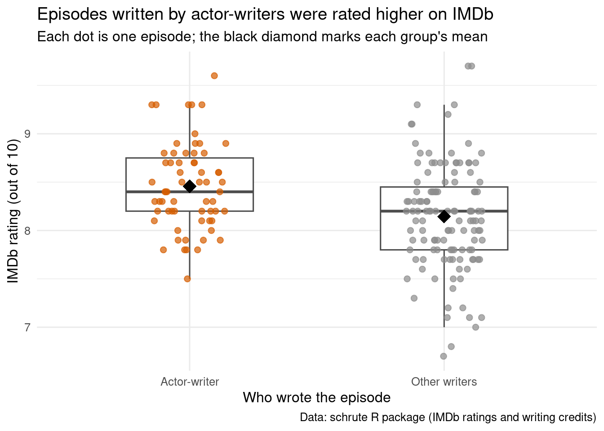
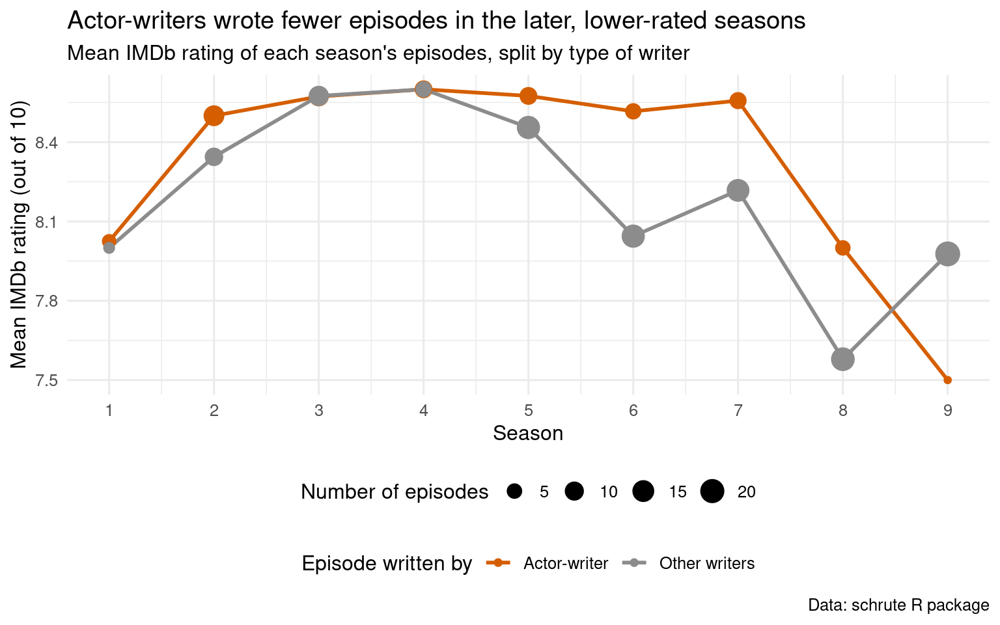
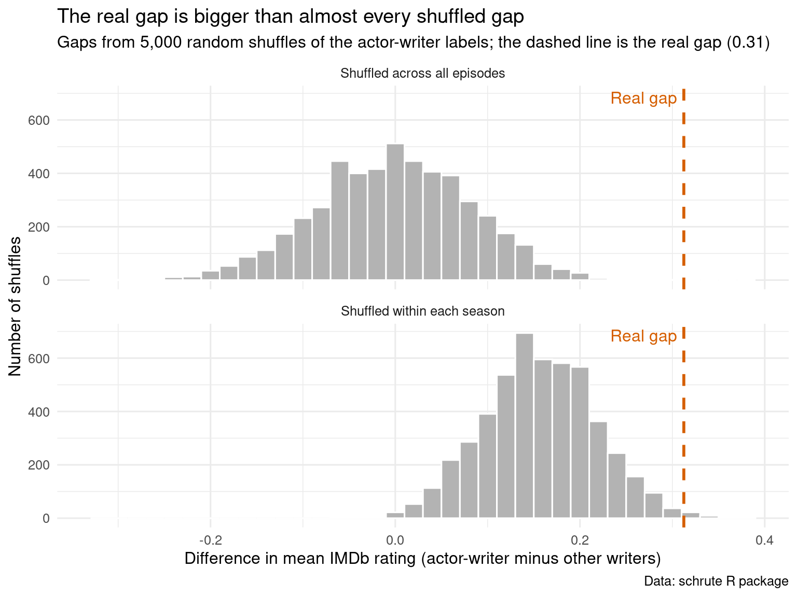

Code
# install.packages("schrute")
library(tidyverse)
library(schrute)
library(knitr)
office <- schrute::theofficeA permutation test of whether episodes of The Office written by cast members were rated higher on IMDb than episodes written by everyone else.
Nelson Hernandez
November 5, 2026
One of my favorite fun facts is that several of the people who wrote episodes of The Office were also in the cast! In this project I test whether the episodes they wrote were rated higher on IMDb than episodes written by everyone else, by more than we would expect if the writer had nothing to do with the rating. I write a function that randomly shuffles which episodes count as “actor-writer” episodes and recomputes the gap in mean rating, and then I use map_dbl() to repeat that shuffle 5,000 times to see what gaps chance alone produces. Because the actor-writers wrote most of their episodes in the early seasons, which were rated higher on average than the later ones, I also run a second version of the test that only shuffles episodes within the same season.
The Office (US) ran for nine seasons on NBC, from 2005 to 2013. Several of its writers were also in the cast:
For the sake fo this project, I call these five the actor-writers. Additionally, I only count writers who played a main or recurring character, not writers who showed up once as a guest.
This question came to my mind because an actor-writer knows the characters from the inside. They perform in the scenes, they know what the other actors do well, and they have a personal stake in how the show turns out. I believe that if that inside knowledge makes for better episodes, their episodes should be rated higher. However, every script on a show like this gets rewritten by the whole writers’ room, so the name in the credits might not matter at all.
This is my research question: Do episodes of The Office written by an actor-writer have a higher mean IMDb rating than episodes written by other writers?
The variables I use are:
imdb_rating: the episode’s average rating on IMDb, out of 10, based on roughly 1,400 to 7,900 user votes per episodewriter: the episode’s credited writers (co-written episodes list several names separated by semicolons)actor_writer: a variable I create, TRUE if at least one credited writer is an actor-writer and FALSE otherwiseseason: the season the episode aired in, which I use in the second version of the testactor_writers <- c("Mindy Kaling", "B.J. Novak", "Paul Lieberstein",
"Michael Schur", "Steve Carell")
# theoffice has one row per line of dialogue, so we collapse it to one row per episode
episodes <- office |>
mutate(season = as.integer(season), episode = as.integer(episode)) |>
group_by(season, episode) |>
summarize(
episode_name = first(episode_name),
writer = first(writer),
imdb_rating = first(imdb_rating),
.groups = "drop"
) |>
mutate(
# we split each credit into names, then check each episode for an actor-writer
actor_writer = map_lgl(
str_split(writer, ";"),
\(people) any(str_trim(people) %in% actor_writers)
),
writer_type = if_else(actor_writer, "Actor-writer", "Other writers")
)
aw_by_season <- episodes |>
group_by(season) |>
summarize(aw = sum(actor_writer), total = n())
# single numbers are used in the text
n_aw <- episodes |> filter(actor_writer) |> nrow()
n_other <- episodes |> filter(!actor_writer) |> nrow()
s2_aw <- aw_by_season |> filter(season == 2) |> pull(aw)
s2_total <- aw_by_season |> filter(season == 2) |> pull(total)
s9_aw <- aw_by_season |> filter(season == 9) |> pull(aw)
s9_total <- aw_by_season |> filter(season == 9) |> pull(total)Each row of theoffice is one line of dialogue, so I first collapse the data to one row per episode. It is important to note that two-part episodes, which are some of the most popular, appear as a single episode in this data, which leaves 186 episodes. Of these, 63 were written or co-written by an actor-writer and the other 123 were written by other writers. To flag the actor-writer episodes, str_split() breaks each writing credit into separate names, and map_lgl() goes through the episodes one at a time and checks whether any of those names is on the actor-writer list. I match full names exactly, so a different writer with the same last name, Warren Lieberstein, is not counted.
Data source: I got the data from the schrute R package by Brad Lindblad (https://bradlindblad.github.io/schrute/), installed from CRAN. The idea for the use of this dataset came from TidyTuesday, as the same data was featured in TidyTuesday on March 17, 2020 (https://github.com/rfordatascience/tidytuesday/tree/main/data/2020/2020-03-17). As for where the information originally comes from: the transcripts were typed up by fans on the Forever Dreaming transcripts site (https://transcripts.foreverdreaming.org), which the package author scraped. The writer credits come from a table of each episode’s credited writers and directors that the package author added, and the IMDb ratings are averages of votes by IMDb users, which TidyTuesday collected from data.world in 2020 and the package joined onto the transcripts.
group_summary <- episodes |>
group_by(writer_type) |>
summarize(
episodes = n(),
mean_rating = mean(imdb_rating),
median_rating = median(imdb_rating),
sd_rating = sd(imdb_rating),
lowest = min(imdb_rating),
highest = max(imdb_rating)
)
# single numbers used in the text
mean_aw <- group_summary |> filter(writer_type == "Actor-writer") |> pull(mean_rating)
mean_other <- group_summary |> filter(writer_type == "Other writers") |> pull(mean_rating)
min_aw <- group_summary |> filter(writer_type == "Actor-writer") |> pull(lowest)
min_other <- group_summary |> filter(writer_type == "Other writers") |> pull(lowest)
sd_all <- episodes |> summarize(sd_rating = sd(imdb_rating)) |> pull(sd_rating)
# actor-writer mean minus other writers' mean
obs_diff <- mean_aw - mean_other
kable(
group_summary,
digits = 2,
col.names = c("Episode written by", "Episodes", "Mean rating",
"Median rating", "SD", "Lowest", "Highest"),
caption = "IMDb ratings of The Office episodes, by type of writer"
)| Episode written by | Episodes | Mean rating | Median rating | SD | Lowest | Highest |
|---|---|---|---|---|---|---|
| Actor-writer | 63 | 8.46 | 8.4 | 0.45 | 7.5 | 9.6 |
| Other writers | 123 | 8.14 | 8.2 | 0.55 | 6.7 | 9.7 |
set.seed(47)
writer_colors <- c("Actor-writer" = "#D55E00", "Other writers" = "grey55")
ggplot(episodes, aes(x = writer_type, y = imdb_rating, color = writer_type)) +
geom_boxplot(outlier.shape = NA, width = 0.5, color = "grey30") +
geom_jitter(width = 0.15, height = 0, size = 2, alpha = 0.7) +
stat_summary(fun = mean, geom = "point", shape = 18, size = 5, color = "black") +
scale_color_manual(values = writer_colors) +
guides(color = "none") +
labs(
title = "Episodes written by actor-writers were rated higher on IMDb",
subtitle = "Each dot is one episode; the black diamond marks each group's mean",
x = "Who wrote the episode",
y = "IMDb rating (out of 10)",
caption = "Data: schrute R package (IMDb ratings and writing credits)"
) +
theme_minimal(base_size = 12)
The table gives summary statistics for each group, and the plot shows every episode behind them. Each dot is one episode, and the box shows the middle half of each group’s ratings. The black diamonds mark the group means: 8.46 for actor-writer episodes and 8.14 for episodes by other writers, a gap of 0.31 points. The whole actor-writer box sits a little higher, and the spread is narrower: their lowest-rated episode scores 7.5, while episodes by other writers go as low as 6.7. None of the ten lowest-rated episodes of the series were written by an actor-writer.
A gap of 0.31 might sound small, but most episodes of this show are rated between about 7.5 and 9 (we have to keep in mind that this is an extremely popular TV show), so it is a bit more than half of a standard deviation of the ratings (0.58 SD). The question for the simulation is whether a gap this big could easily happen by chance.
In my earlier page on The Office I found that the show was rated lower in its last seasons. That matters here, because the actor-writers did not write evenly across the show’s run.
season_means <- episodes |>
group_by(season, writer_type) |>
summarize(mean_rating = mean(imdb_rating), n_episodes = n(), .groups = "drop")
ggplot(season_means, aes(x = season, y = mean_rating, color = writer_type)) +
geom_line(linewidth = 1) +
geom_point(aes(size = n_episodes)) +
scale_x_continuous(breaks = 1:9) +
scale_color_manual(values = writer_colors) +
scale_size(range = c(1.5, 6)) +
labs(
title = "Actor-writers wrote fewer episodes in the later, lower-rated seasons",
subtitle = "Mean IMDb rating of each season's episodes, split by type of writer",
x = "Season",
y = "Mean IMDb rating (out of 10)",
color = "Episode written by",
size = "Number of episodes",
caption = "Data: schrute R package"
) +
theme_minimal(base_size = 12) +
theme(legend.position = "bottom", legend.box = "vertical")
Each point is the mean rating of one group in one season, and bigger points mean more episodes. Two things stand out. First, the orange points get smaller over time: actor-writers wrote 13 of the 22 episodes in Season 2 but only 1 of the 23 in Season 9. Second, both lines are at their lowest in Seasons 8 and 9. So part of the overall gap could just be timing, as the actor-writers wrote more of the strong early seasons and fewer of the weaker late ones.
Nonetheless, the season-by-season comparison shows that timing is not the whole story. In the first four seasons the two groups are within 0.2 points of each other, but from Season 5 to Season 8 the actor-writer episodes are rated between about 0.1 and 0.5 points higher than other episodes from the same season (Season 9 has only one actor-writer episode, so that point says very little). To separate the writer from the timing, I run the test two ways.
The hypotheses are:
The test statistic is the mean rating of actor-writer episodes minus the mean rating of other episodes. In the real data it is 0.312. I use a one-sided test because the research question asks whether actor-writer episodes are rated higher.
The logic of a permutation test is this: if the null hypothesis is true, the “actor-writer” label is just a tag that could have been attached to any 63 of the episodes. So I keep every episode’s rating exactly as it is, shuffle the labels, and recompute the gap. Doing that thousands of times shows the range of gaps we would see if nothing were going on.
# One shuffle: randomly reassign the actor-writer labels, then return the new
# difference in mean rating (actor-writer minus other writers).
# rep is only a counter so that the function can be used inside map_dbl().
perm_diff <- function(rep, data, within_season = FALSE) {
if (within_season) {
data <- group_by(data, season)
}
data |>
mutate(actor_writer = sample(actor_writer)) |>
ungroup() |>
group_by(actor_writer) |>
summarize(mean_rating = mean(imdb_rating)) |>
# the rows are FALSE then TRUE, so diff() gives actor-writer minus other writers
summarize(diff = diff(mean_rating)) |>
pull(diff)
}What the function does: perm_diff() performs one shuffle. It takes the episode data, uses sample() to randomly reorder the actor_writer column, so that 63 randomly chosen episodes get labeled as actor-writer episodes. Then group_by() and summarize() find the mean rating of each shuffled group, and pull() returns the difference between them. Its first argument, rep, is not used inside the function. Instead, it is only there so I can hand the function the numbers 1 to 5,000 with map_dbl().
The within_season argument controls which kind of shuffle happens:
within_season = FALSE (the default), the labels are shuffled across all 186 episodes. This simulates a world where the writer has nothing to do with the rating.within_season = TRUE, the data is grouped by season first, so labels only move between episodes from the same season. Every season keeps its real number of actor-writer episodes (for example, 13 in Season 2 and 1 in Season 9). This simulates a world where the writer has nothing to do with the rating within a season, but the actor-writers still wrote mostly in the early seasons. That gives a fairer comparison, because it builds the timing effect into the null distribution.set.seed(47)
reps <- 5000
# map_dbl() calls perm_diff() once for each number in 1:reps
# and collects the shuffled gaps into one numeric vector
null_dist <- tibble(
shuffle = rep(c("Shuffled across all episodes", "Shuffled within each season"),
each = reps),
diff = c(
map_dbl(1:reps, perm_diff, data = episodes),
map_dbl(1:reps, perm_diff, data = episodes, within_season = TRUE)
)
)
results <- null_dist |>
group_by(shuffle) |>
summarize(
null_mean = mean(diff),
# rounding makes exact ties with the real gap count, despite tiny computer rounding errors
as_big = sum(round(diff, 6) >= round(obs_diff, 6)),
p_value = as_big / reps
)
# single numbers used in the text
big_all <- results |> filter(shuffle == "Shuffled across all episodes") |> pull(as_big)
p_all <- results |> filter(shuffle == "Shuffled across all episodes") |> pull(p_value)
null_mean_season <- results |> filter(shuffle == "Shuffled within each season") |> pull(null_mean)
big_season <- results |> filter(shuffle == "Shuffled within each season") |> pull(as_big)
p_season <- results |> filter(shuffle == "Shuffled within each season") |> pull(p_value)
# report "less than 1/reps" if no shuffle reached the real gap
format_p <- function(p) {
if (p == 0) {
str_c("less than ", format(1 / reps, scientific = FALSE))
} else {
format(round(p, 4), nsmall = 4, scientific = FALSE)
}
}
# write "none" or "only 28" in the text instead of a bare number
count_words <- function(n) {
if (n == 0) "none" else str_c("only ", n)
}Why I map the function: one shuffle by itself tells us almost nothing, because it is just one random gap. To see the whole null distribution I need thousands of shuffles. map_dbl(1:reps, perm_diff, data = episodes) calls perm_diff() once for each number from 1 to 5,000 and returns all 5,000 gaps as a numeric vector, with each value being one draw from the null distribution. I do this twice, once for each kind of shuffle, and stack the results into one data frame so I can plot them side by side.
ggplot(null_dist, aes(x = diff)) +
geom_histogram(binwidth = 0.02, fill = "grey70", color = "white") +
geom_vline(xintercept = obs_diff, color = "#D55E00",
linewidth = 1, linetype = "dashed") +
annotate("text", x = obs_diff, y = Inf, label = "Real gap",
color = "#D55E00", hjust = 1.1, vjust = 1.5) +
facet_wrap(~ shuffle, ncol = 1) +
labs(
title = "The real gap is bigger than almost every shuffled gap",
subtitle = str_c("Gaps from ", scales::comma(reps),
" random shuffles of the actor-writer labels; the dashed line is the real gap (",
round(obs_diff, 2), ")"),
x = "Difference in mean IMDb rating (actor-writer minus other writers)",
y = "Number of shuffles",
caption = "Data: schrute R package"
) +
theme_minimal(base_size = 12)
| Type of shuffle | Mean of shuffled gaps | Shuffles at least as big as the real gap | p-value |
|---|---|---|---|
| Shuffled across all episodes | -0.001 | 0 | less than 0.0002 |
| Shuffled within each season | 0.157 | 36 | 0.0072 |
Each histogram shows the 5,000 gaps from one kind of shuffle, and the dashed orange line marks the real gap of 0.31. The table lists, for each kind of shuffle, the average shuffled gap, how many shuffles produced a gap at least as big as the real one, and the resulting p-value.
The top panel shuffles the labels across all episodes. It is centered at 0, which is what we expect: when the labels are random, neither group has an advantage. The shuffled gaps almost all stay between -0.2 and 0.2, and none of the 5,000 were at least as large as the real gap, so the p-value is less than 0.0002.
The bottom panel shuffles only within each season, and it is centered at about 0.16 instead of 0. That is the gap we would expect from timing alone: because the actor-writers wrote more of the higher-rated early seasons, their episodes would average about 0.16 points higher even if, within each season, the label meant nothing. The real gap is about twice that size, and only 36 of the 5,000 within-season shuffles reached it, so the p-value is 0.0072.
Both p-values are well below 0.05, so I reject the null hypothesis. Episodes of The Office written by an actor-writer have a higher mean IMDb rating than episodes written by other writers, and the gap is too large to be explained by chance alone, even after accounting for the season each episode aired in. About half of the raw gap of 0.31 points can be explained by timing, but the rest remains when episodes are only compared with other episodes from the same season.
It is important to be clear about what this result applies to. These 186 episodes are every episode of the show, not a random sample, so the test is not about some larger set of episodes. Instead, it asks whether the link between writer and rating is stronger than random assignment of writers to episodes would produce. The ratings themselves come from IMDb users who chose to rate the episodes, who are probably bigger fans than the average viewer, and the ratings are a snapshot from around 2020. So the conclusion describes how IMDb users rated The Office, not how all viewers felt about it, and it does not tell us anything about actor-writers on other shows.
The result also does not show that being in the cast made someone a better writer. The writers were not randomly assigned to episodes. Four of the five actor-writers had writing credits starting in the first season, so by the later seasons they were some of the most experienced writers on the show, and they may have been given the episodes that were expected to be big ones, such as the wedding episode “Niagara” or the Season 2 finale “Casino Night.” Experience or episode assignment could explain the gap just as well as acting experience.
I combined the dialogue-level schrute data into one row per episode and used str_split() with map_lgl() to flag the 63 episodes written by Mindy Kaling, B.J. Novak, Paul Lieberstein, Michael Schur, or Steve Carell. I wrote a function, perm_diff(), that shuffles the actor-writer labels and returns the new gap in mean IMDb rating, and I used map_dbl() to run it 5,000 times across all episodes and 5,000 times within seasons. The real gap of 0.31 points was larger than nearly every shuffled gap in both versions, so I concluded that actor-writer episodes were rated higher than chance would explain. Part of that gap is due to when the actor-writers wrote, and the rest could reflect experience or which episodes they were assigned, not only their acting.